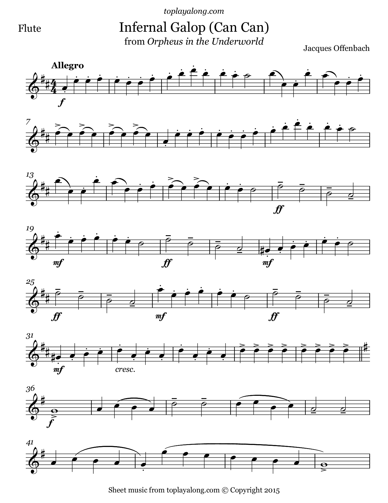

My hobby
Now I want to intro duce some of my favorite music piece and their composer
- The Marriage of Figaro ----- W. A. Mozart(Italian: Le nozze di Figaro)
- Symphony No. 8 (Unfinished Symphony) ----- Franz Schubert's
- The Planets-Jupiter ----- Gustav Holst
- Orpheus in the Underworld (Orphée aux enferswhose) ----- Jacques Offenbach
this is the music piece or the pictues of the music
|
.jpg "Symphony No. 8 (Unfinished Symphony)") |
|
 |
Click Me to first